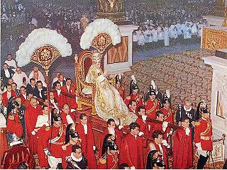
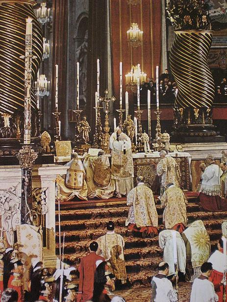
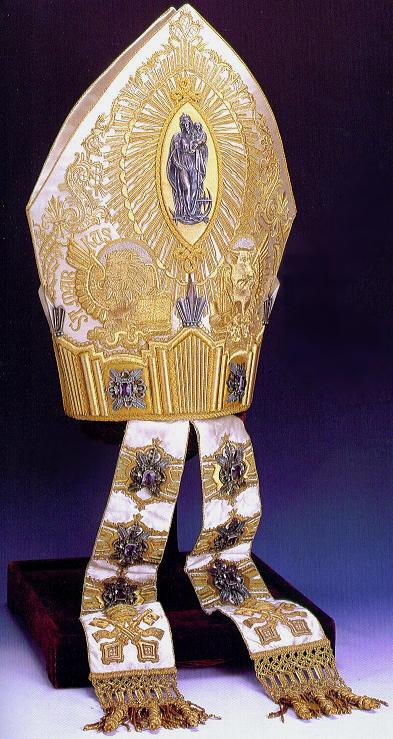
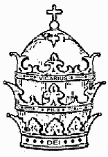

Correcting
Samuele Bacchiocchi's
Newsletters on 666.
Correcting
Samuele Bacchiocchi's
ENDTIME ISSUES NEWSLETTER No. 139
In newsletter 139,
Dr. Bacchiocchi makes the following assertion:
|
... "it has been
wise for our Adventist church to abandon the traditional numeric
interpretation of VICARIUS FILII DEI which lacks both exegetical
and historical support."
|
The Exegetical Support
Rev 13:1 And I stood upon the sand of the sea, and
saw a beast rise up out of the sea, having seven heads and ten horns,
and upon his horns ten crowns, and upon his heads the name of
blasphemy.
Note that this "name of blasphemy" is associated with
the heads of the sea beast. The word translated "name" in that verse is
onoma:
G3686. onoma, on'-om-ah; from a presumed der. of
the base of G1097 (comp. G3685); a "name" (lit. or fig.) [authority,
character]:--called, (+ sur-) name (-d).
The same word is translated "name" in the following
verse:
Rev 13:6 And he opened his mouth in blasphemy
against God, to blaspheme his name, and his tabernacle, and
them that dwell in heaven.
This "name of blasphemy" of the sea beast is again
mentioned in the following verses
Rev 13:17 And that no man might buy or sell, save
he that had the mark, or the name of the beast, or the number of
his name.
Rev 13:18 Here is wisdom. Let him that hath understanding count the
number of the beast: for it is the number of a man; and his number is
Six hundred threescore and six.
So the blasphemous name of the beast from the sea
equals 666. A key piece in this mystery is the next verse:
Rev 19:16 And he hath on his vesture and on his
thigh a name written, KING OF KINGS, AND LORD OF LORDS.
The same Greek word is used in that verse for "name".
Note that it refers to a Title of Jesus. So Revelation 13:1, 6,
17 and 18 can refer to a blasphemous title assumed by the
heads of the sea beast.
The same wisdom that unlocks the name/number of the
sea beast is mentioned in Revelation 17:
Rev 17:9 And here is the mind which hath wisdom.
The seven heads are seven mountains, on which the woman sitteth.
That points us directly to the woman (church) seated
in Rome, the Roman Catholic Church.
So, now let's let scripture tell us a definition of
blasphemy:
John 10:31 Then the Jews took up stones again to
stone him.
John 10:32 Jesus answered them, Many good works
have I showed you from my Father; for which of those works do ye stone
me?
John 10:33 The Jews answered him, saying, For a good work we stone thee
not; but for blasphemy; and because that thou, being a man, makest
thyself God.
VICARIVS FILII DEI (Taking the place of the Son of
God) is a blasphemous title that has a long history in Roman Catholic
documents (whether it ever appeared on a tiara or not), and it does
equal 666 when the Roman numeral value of the letters are added up. See
http://biblelight.net/666.htm
for the historical documentation.
It is also worth noting that Roman Catholics, while
denying any "official" standing for VICARIVS FILII DEI, will readily
admit that the synonymous VICARIVS CHRISTI is the proper and official
papal title (it does not add up to 666). Well, let's notice this next
verse:
Rev 17:3 So he carried me away in the spirit into
the wilderness: and I saw a woman sit upon a scarlet coloured beast, full
of names of blasphemy, having seven heads and ten horns.
So there are many blasphemous titles assumed
by the sea beast, not just the one that adds up to 666. Well, another
perfectly valid way of saying VICARIVS CHRISTI is ANTICHRIST, both of
which mean "Taking the place of Christ".
So, there is both historical and biblical
exegetical support for blasphemous papal titles being the name
associated with the sea beast in Revelation 13.
I have corresponded via email with Dr. Bacchiocchi,
and asked him to show me any flaw in the above page, and he
flatly refuses to do so. He responds with ad hominem. All he wants to
do is sell me his material, saying I obviously do not wish to learn if
I do not immediately order his study, that I am "afraid of being
enlightened", if I do not send him money for his pearls of wisdom. He
is obviously running a business, and that is his priority.
Correcting
Samuele Bacchiocchi's
ENDTIME ISSUES NEWSLETTER No. 140
In his recent newsletter 140,
Dr. Bacchiocchi makes the following assertion (bold face is mine):
|
"Uriah Smith, who pioneered the Vicarius Filii Dei
interpretation was a good man, with good intentions, but with limited
resources. He based his interpretation on stories of people who
claimed to have seen that inscription on the pope's tiara, while
watching the pope in Rome, in procession or in the celebrations the
Mass. "The stories are discredited by the fact that the tiara
is placed upon the head of the new pope only at the coronation
ceremony. For special religious ceremonies the pope wears the miter - a
cloth hat - not the golden tiara."
|
This assertion by Dr. Bacchiocchi that the papal tiara was only
worn by a pope at his coronation is completely unsupported by any
documentation, and is in fact erroneous, and that can be
documented.
Note the following documentation:
The
History of the Papacy in the XIXth Century, by Fredrik Kristian
Nielsen, J. Murray (1906), pg. 123, records that after saying Mass,
Pius VI, wearing a tiara, appeared on the balcony of Vienna's St.
Steven's cathedral on Easter Sunday of 1782, to bless a crowd of fifty
thousand people.
The Family
Magazine, or Monthly Abstract Of General Knowledge issue of May
1, 1838, reported that the Pope wore the tiara in procession on Palm
Sunday, and included an illustration.
The Washington Post,
Sunday, April 15, 1906, reported that prior to 1870, Pius IX would
greet the Easter sunrise wearing his jeweled tiara, from the balcony of
St. Peter's, and pronounce the Benedicat Vos blessing.
The Standard, Ogden
City Utah, Tuesday, January 3, 1888, reported that Leo XIII wore the
tiara given to him by Emperor Wilhelm I
of Germany, while being borne in the gestatorial chair, after
celebrating a pontifical Mass to honor his Golden Jubilee as a priest. (Pope
Leo XIII's coronation was February 20th,1878.)
The Idaho
Daily Statesman, Boise Idaho, Wednesday, September 30, 1891,
reported that on the previous day Leo XIII wore the tiara when carried
in procession to his celebration of a low Mass. No special occasion
was mentioned.
The Constitution,
Atlanta Georgia, Monday, February 19th, 1894, reported that on the
previous day, Pope Leo XIII wore the tiara presented to him by Emperor
Franz Joseph of Austria Hungary after the last pontifical Mass of his
Jubilee year (15th of his pontificate).
The
Marion Daily Star, Marion Ohio, March 3rd, 1902, reported that
Pope Leo XIII wore the triple tiara to Mass that day, celebrating his
pontifical anniversary.
The Evening
Sentinel, Fort Wayne, Indiana, July 22, 1903, reported that Leo
XIII wore the tiara given to him by Emperor Wilhelm I of Germany, on Dec 23, 1887,
when celebrating his Golden Jubilee year as a priest.
The Daily Kennebec Journal,
Kennebec, Maine, April 12, 1904, reported that Pius X wore a tiara in
procession to and from mass the previous day (Monday) when celebrating
the 13th centennial of Pope St. Gregory the great.
Newark Daily Advocate,
Newark Ohio, Thursday, April 16, 1908, reported that Pius X would wear
the tiara in procession to and from Easter Sunday Mass.
The Iowa Recorder, Greene
Iowa, Wednesday, April 12, 1922, reported that Pius XI would wear the
tiara in procession to (and from) Easter Sunday Mass.
The Daily Gleaner,
Kingston Jamaica, Thursday, July 11, 1935, reported that Pius XI wore
the tiara before and after the canonization ceremony (May 19, 1935) of 2 Englishmen, John Fisher and Thomas More.
The Ironwood Daily Globe,
Ironwood Michigan, Thursday, June 18, 1936, reported that Pius XI wore
the tiara to (and from) the ceremony awarding red hats to six new
cardinals that day.
The Nebraska State
Journal, Lincoln, Monday, April 10, 1939, reported that Pius
XII wore his coronation tiara while carried in the portable throne on
Easter Sunday.
Screen capture (above) from
video of Pius XII proclaiming the Easter blessing of March 29th,
1940, wearing a tiara.
The Syracuse Herald
Journal, New York, Monday, March 13, 1950, Reported that Pius
XII wore the tiara on that day, when he held a pontifical mass to
celebrate the 11th anniversary of his pontificate.
The
Herald Press, St. Joseph Michigan, Monday, March 30, 1959, ran
a photo of John XXIII wearing the tiara, bestowing the Easter blessing
to the crowd in St. Peter's square.
The Lincoln Evening
Journal, Nebraska, December 26, 1960, ran a photo of John XXIII
wearing the tiara, bestowing the Christmas blessing to the crowd in St.
Peter's square.
The Oshkosh Daily
Northwestern, Wisconsin, Thursday, December 26th, 1963, ran a
photo of Paul VI wearing the tiara, bestowing the Christmas blessing to
the crowd in St. Peter's square.
The Gettysburg Times,
Pennsylvania, Monday, August 7, 1978, ran a photo of Paul VI wearing
the tiara, giving the Easter message to the crowd in St. Peter's square
on March 29th, 1964.
Popes regularly wore a tiara during
the pomp of the procession to and from Mass:
Pontifical Mass
The solemn pontifical Mass celebrated by the pope in St. Peter's
has some peculiar ceremonies. ... The pope, wearing the falda, amice,
alb, cincture, pectoral cross, stola, cope (mantum), and tiara is
carried into the basilica on the sedia gestatoria under the
canopy and with the two flabella borne on either side. ... The
pope returns to the altar to finish the Mass. After the blessing the
assistant priest publishes the plenary indulgence. At the end of the
last Gospel the pope goes to the sedia gestatoria, puts on the
tiara, and returns in procession as he had entered.
Source:  The 1911 Catholic
Encyclopedia Online, volume 12.
The 1911 Catholic
Encyclopedia Online, volume 12.
|

Crowned Pope Pius XII in procession on the
Sedia Gestatoria
|
Crowned Pope John XXIII in procession
on the Sedia Gestatoria
|

Pope John XXIII celebrating Mass at St. Peter's.
Two triple tiaras can be seen on the altar to the Pope's right and a
mitre to his left.
Below are photos of Pope John XXIII
wearing three different tiaras:
Of these photos, only
one is from his coronation day.
The above shows Pope John XXIII wearing a tiara on
the fourth anniversary of his pontificate.
I think all the above demonstrate that a Pope could
wear a tiara on just about any day he deemed appropriate. So when
eyewitness testimony claims to have seen a pope wearing a tiara at a
papal Mass, it is believable, since popes have regularly worn a tiara
on special occasions like jubilees, Christmas, Easter, and
canonizations, etc., on the way to Mass, and after concluding Mass
(though not during the actual service).
So, I would say that while Dr. Bacchiocchi has good
intentions, he has obviously done limited research, and that has led
him to an erroneous conclusion. The truth is that a pope in the 19th
century may very well have worn a triple tiara or miter inscribed with
VICARIVS FILII DEI, as testified, and nothing Dr. Bacchiocchi has
presented precludes that possibility. He needs to retract and apologize
to his readers.
At my request, Dr. Bacchiocchi provided this email
reply to the above on 18 Dec, 2005:
THE NUMERICAL INTERPRETATION OF VICARIUS FILII
DEI IS NEGATED
1) EXEGETICALLY; by the fact that Revelation 13:18, speak of a HUMAN
NUMBER, not the number of a personal name. Moreover the number is
not on the forehead of the beast, but of his followers. Nowhere the
Bible uses GEMATRIA to interpret numbers.
2) HISTORICALLY, VICARIUS FILII DEI was NOT the most common name of the
pope. the common name is VICARIUS CHRISTI - VICAR OF CHRIST. In
the history of our Adventist church our early pioneers, including Ellen
White, believed that 666 was the number of Protestant sects influenced
by Rome. It was Uriah Smith that introduced VICARIUS FILII DEI on the
basis of stories he heard about the pope's title on the tiara.
3) ORIGINAL READERS are urged to understand the mark, name, and
number. They could have never understood a Latin name that was
coined eight centuries later.
4) FINAL CONFLICT over false worship enforced by the false trinity,
encompasses far more than the papacy.
Michael, if you are blinded by tradition and do not wish to open your
mind, please do not contact me anymore. There is no reason why I
should waste my time for a person who want to argue, without first
doing the home work or reading the research of competent and dedicated
scholars.
PLEASE STOP WASTING MY TIME. |
1) Context, context, context. In my study above, I show that in
context (vs. 1, 6, 17, and 19:16), Revelation 13:18 is clearly
speaking about the numeric value of a blasphemous title assumed
by the sea beast, the papacy. As they are not blasphemous, personal
names are indeed excluded. So, Ronald Reagan, Bill Gates, Henry
Kissinger, Ellen White, etc., are automatically excluded. Regarding
Gematria, we are told to "count the number" of the name (title) of the
sea beast, which is clearly telling us to compute the number
from the name (title). In other words, the numeric value is not
obvious, it must be calculated. To have the name or number of
the sea beast is to give allegiance to the blasphemous usurped
authority of the papacy, the key issue being the Sabbath commandment
(Dan 7:25). Dr. Bacchiocchi totally ignored the context in his
newsletter, and he refuses to address my brief study above. His
reluctance may be because he is unable to deal with the context in a
faithful and meaningful manner.
2) It does not matter how rare VICARIVS FILII DEI is, it is still
valid, as it has a long history in Catholic documents.
3) Dr. Bacchiocchi is asserting here that the audience of the
first century must necessarily have fully understood the riddle posed
by 666. The example of Daniel and his vision (Dan 8:27) shows that not
only can the contemporary hearers or readers not understand the
prophecy, but the prophet himself likely did not know the full
prophetic meaning even as he penned the words. This means God
gets the glory for the prophetic insight, not the prophet, as the human
intelligence or wisdom of the prophet is not a factor in the accuracy
of the prophecy (2 Peter 1:20-21). So I see no compelling reason for
666 to have been understood by the initial readers.
4) In Elijah's time, the false trinity opposing him was King Ahab,
Jezebel, and the prophets of Baal. In John the Baptist's time it was
King Herod, Herodias, and their daughter. In Revelation the false
trinity is the Dragon (Satan), the Sea Beast (Antichrist Papacy), and
the lamblike Land Beast, which is also called the False Prophet
(Apostate U.S. Protestantism). In each case, the real threat is the
harlot woman/mother in the story, not the King (dragon/government) or
the false prophets/daughter. It is the harlot woman that demands the
death of God's people, and the government and apostate daughters are
her tools to accomplishing that goal. The same is true of the
crucifixion of Jesus. It was the Scribes and Pharisees, the rulers of
the established church, who forced the Roman government to put Jesus to
death, and they did this by inciting the people to demand His
crucifixion. History, we can see from Revelation, will repeat itself.
So, am I "blinded by tradition"? Well, I carefully examine what
Scripture has to say for myself, and am willing to follow the truth
wherever it leads me. I am also willing to examine and seek out
historical evidence, and consider it, whether it favors my point of
view or not. Believing and teaching error can earn you the lake of
fire, so I have no agenda beyond ascertaining the truth. Tradition does
not have any value to me. Adventism has no value to me if it is not
teaching the truth. If Dr. Bacchiocchi has the truth, then it will
withstand all challenges, if he does not, it will not hold up under the
simplest challenge. I have presented a rather simple challenge, which
could be quickly picked apart and demolished by Dr. Bacchiocchi if it
were flawed. I think I have done my homework, enough to show Dr.
Bacchiocchi is in error.
Correcting
Samuele Bacchiocchi's
ENDTIME ISSUES NEWSLETTER No. 145
In newsletter
145, Dr. Bacchiocchi states the following:
| 5) The
sources cited by Uriah Smith to support his identification of the
number 666 with the pope's title Vicarius Filii Dei, are the
accounts of two eyewitnesses who claimed to have seen the inscription
on the pope's tiara while in Rome. One claimed to have seen the
inscribed papal tiara in the Vatican Museum and the other witness
allegedly saw it during an Easter Mass celebrations. Both accounts are
discredited by the fact that papal tiaras are not displayed in the
Vatican Museum, nor does the pope wear the tiara for Mass celebrations.
The three-crowns gold Tiara has been used primarily for the coronation
of the pope-a practice that has been discontinued by the latest three
popes, John Paul I, John Paul II, and Benedict XVI. |
Dr. Bacchiocchi seems unwilling to let his readers
know that Popes frequently wore the triple tiara both to and from
Mass at St. Peter's, as demonstrated by the above documentation. A visitor to St. Peter's on
Easter Sunday might easily remark that he had observed the Pope wearing
a tiara at Easter Mass, not taking into consideration that Mass
technically began only after the Pope removed his tiara, and that the
Mass technically ended before the Pope put the tiara on again. (The
triple tiara is a non-liturgical symbol of the Pope's temporal
authority over kings, and the papal mitre is a symbol of the Pope's
ecclesiastical authority, so only the mitre is worn during Mass.) So I
maintain that it is probable that Pope Gregory XVI was observed
wearing a tiara both before and after the Easter service of 1845, as
this was a common practice, as documented.
There are apparently at least two places
where the Vatican stores papal headgear, one is the Sacristy
& Treasury Museum of St. Peter's, and the other is the Papal
Sacristy of the Sistine Chapel, also known as the room of the Copricapi, which is located behind
the altar and fresco of the Last Judgment.
Detail from a
photo on page 44 of St. Peter and the Vatican: The Legacy of the
Popes,
by Allen Dunston, O.P., and Roberto Zagnoli, ISBN 0-88397-140-2
(paperback catalogue).

Seven triple tiaras in the display case of the Papal Sacristy of the Sistine Chapel (room
of the Copricapi). From left to right they are:
- 1922 tiara of Pius XI.
- 1903 tiara of Leo XIII.
- 1887 neo-gothic tiara of Leo
XIII.
- 1871 tiara of Pius IX.
- 1834 tiara of Gregory XVI.
- 1805 tiara of Pius VII.
- 1820 cloth tiara of Pius VII.
Again Dr. Bacchiocchi dismisses an eye witness on a
technicality, not considering the sacristies a part of the Vatican
Museum proper. It is quite possible that a visitor to the Vatican
viewed tiaras in one of these sacristies and simply stated later that
the inscribed tiara was seen during a tour of the Vatican museum.
Nothing Dr. Bacchiocchi has presented discredits the
eyewitness testimony.
Correcting
Samuele Bacchiocchi's
ENDTIME ISSUES NEWSLETTER No. 146
In his DVD lecture and newsletter
146, Dr. Bacchiocchi states in an authoritative manner that there
are 13 existing tiaras. I believe that statement to be in error, as my
research indicates there are actually more than 20. See http://biblelight.net/claims.htm
He also states "The fact is that there are
no inscriptions on papal Mitres". Note this photo:
Photo from
page 351 of St. Peter and the Vatican: The Legacy of the Popes,
by Allen Dunston, O.P., and Roberto Zagnoli, ISBN 0-88397-140-2
(paperback catalogue).

1929 mitre of Pius XI. On the left side is the
name of St. Mark with the symbolic lion,
and on the right side (though hard to see in this photo) is the name of
St. Luke with the symbolic ox.
The above illustration, from page 406
of Volume X of the 1913 Catholic Encyclopedia, shows a 16th century
mitre that has infulae inscribed as follows:
TV ES GLORIA MEA (Thou, O Lord, art my glory)
TV EXALTAS CAPVT MEVM (thou art the lifter up of my head)
These phrases are found in the Breviarium,
Commune Unius Confessoris Pontificis, Psalmus
3.
If there is an inscription at the base of the mitre,
I have been unable to read it.
I conclude that when Dr. Bacchiocchi states that there are no
inscriptions on papal mitres, it is just as reliable as Catholics who
claim there are no inscriptions on papal tiaras. Unless one has seen
every single item in question, it is foolish to make such assertions.
There have probably been hundreds of the cloth papal mitres,
which are liturgical hats worn during Mass, and there may well have
been one lettered with Vicarius Filii Dei.
Dr. Bacchiocchi states "Incidentally, Vicarius
Filii Dei is NOT A NAME, but
one of the many TITLES ascribed to the pope." Since he has apparently
not even bothered to read my short analysis of the exegetical support
at the top of this page, his muddle on this point is, shall we say,
predictable.
Notes On Samuele Bacchiocchi's DVD on
666, The Mark and Number of the Beast
I have viewed Dr. Bacchiocchi's recorded DVD
presentation on 666, as well as his PowerPoint file, and have the
following observations.
For PowerPoint slide #98, the accompanying notes
mention that Catholic critics point out that "the pope NEVER wears the
tiara for the celebration of special Masses", so Dr. Bacchiocchi
rejects the eyewitness testimony. Again, the above documentation shows that Popes frequently
wore a tiara both to and from celebrating Mass. So these Catholic
critics are telling a half truth that frankly is irrelevant to whether
or not a pope was observed wearing a tiara on Easter Sunday of 1845, or
any other day. Dr. Bacchiocchi presented nothing more substantial than
these Catholic critics to discredit the eyewitness testimony.

In his slides (1 hour and 6 minutes into DVD #1), Dr.
Bacchiocchi presents this image at left as if it is one of the
fraudulently doctored Adventist tiara images that the General
Conference emphatically rejected for publishing some 60 years ago
because they were misleading and deceptive. The fact is that though he
used it in several of his slides, even after branding
it as unethical, Dr. Bacchiocchi had absolutely no clue where it
originated from. I can say with certainty, that particular drawing is
no older than Nov. 28, 2002, because I produced it. I
found the original unlettered drawing on the internet, enlarged
it some, and then added the lettering to more-or-less match the eye
witness description, and posted it in my article on 666 and that is likely where
he got it. This drawing is not deceptive, fraudulent or
unethical in any way, not as the doctored photo surely is. The drawing
serves a legitimate and ethical illustrative purpose, and obviously
could never be used to fraudulently prove such a tiara exists.
This is why Dr. Bacchiocchi continued to use it in the second DVD, even
after condemning its use in the first DVD. (I have since learned that
the original drawing, with the title all on the lower crown, appeared
in the 1897 and 1906 Review and Herald printing of Uriah Smith's Daniel
and Revelation, page 581, shown below.)
There are to my knowledge, at least 3 papal tiaras
that bear inscriptions, not two, as Dr. Bacchiocchi states. All three
have been displayed in a recent tour of U.S. museums. See http://biblelight.net/claims.htm
Whether or not a tiara or mitre was ever inscribed
with Vicarius Filii Dei is not really relevant to the issue at hand.
Dr. Bacchiocchi adequately shows on the first DVD that the title is
genuinely historical, and therefore valid, it is simply not a
fabrication of any Protestants or Adventists. However, after proving it
genuine, he discards it in the second DVD as not applicable to
Revelation 13. So this whole debate really rests on how the number of
the name of the beast is interpreted and applied, and not on papal
tiaras or mitres. That brings us back to the exegetical support at the
beginning of this page, and no one has shown this interpretation to be
in error.
Notes On Samuele Bacchiocchi's
ENDTIME ISSUES NEWSLETTER No. 147

Dr. Bacchiocchi cites from, and gives us a link to,
the web site of Pastor Mike Leno at http://mikeleno.net
which has a scan of page 699 from an early printing of the 1907 edition
of Daniel and Revelation by Uriah Smith. That illustration is
above on the right. The text at the bottom reads
"FROM A PHOTOGRAPH TAKEN IN THE VATICAN MUSEUM." First of all,
this is NOT a photograph, or even a doctored photograph, it is 100% an
artist's drawing, a drawing made "from a photograph" of a tiara. So why
not just publish the actual photo? Obviously the tiara in the photo did
not have the inscription. The artist had used a photo as a model
for his illustration of what an inscribed tiara would probably look
like, according to the eyewitness testimony. That said, however, the
drawing is apparently realistic enough to fool some people into
thinking they are seeing an actual photograph. The photo above on the
left of the 1834 tiara of Gregory
XVI, taken by C. T. Everson in the Vatican Museum and published in
an article in 1905 (see below), bears no inscription. It is probably
the photo used as a model for the drawing.
Interestingly enough, Dr. Bacchiocchi did not show us
the above drawing in his presentation when discussing doctored photos,
he showed the following slide:
On the right side IS a doctored photo of the 1805 Napoleonic tiara of Pius VII,
but just exactly where he got this photo from, Dr. Bacchiocchi does not
say.
I also would like to highlight and contrast the
generally brilliant intellect and superior insight possessed by those
who agree with Dr. Bacchiocchi on this issue, and the dismally
irresponsible and blind dolts like myself who disagree, and are mired
in tradition and "afraid of being enlightened".
Samuele
Bacchiocchi's
ENDTIME ISSUES NEWSLETTER No. 150
| "A
similar example is the recent effort of our Adventist church to expose
the
problems of the traditional application of the number 666 to the Pope’s
title Vicarius
Filii Dei. In
spite of the research done by trustworthy Adventist
scholars, and the clear and compelling reasons given by Dr. Angel
Rodriguez in
the Sabbath School Lesson of June 1-7, 2002, there are still a
significant
number of Adventists who are determined to hold fast to the traditional
application of 666 to Vicarius Filii Dei. This goes to show that legends do not
easily die." ― Dr. Bacchiocchi in
Newsletter #150. |
All attempts to characterize the application of 666
to the papal title as mere "legend" have been shown to be in error, and
the research leading to that faulty conclusion to be seriously lacking.
There is now ample historical proof of papal use of vicarius filii Dei
in official documents to demonstrate its validity as a title and its
fulfilment of the prophecy. The opinions of those "trustworthy"
scholars and their interpretations can be discarded. See VICARIUS FILII DEI - 666, The
Number of the Beast.
Correcting
Samuele Bacchiocchi's
ENDTIME ISSUES NEWSLETTER No. 201
The following is stated by Dr. Bacchiocchi in
Newsletter #201:
|
Uriah
Smith Was the First to Identify 666 with Vicarius Filii Dei
It was only considerably later in 1884 that Uriah Smith first
identified the number 666 with the pope's title Vicarius Filii Dei.
His identification was based on reports from people who claimed to have
seen the phrase inscribed on the papal tiara, while in Rome watching
the pope participating in religious ceremonies. The credibility of
these reports is negated by the fact that popes have worn the tiara
only during the coronation ceremony, not for other religious
ceremonies. Read my analysis of Uriah Smith's sources in
Endtime Issues Newsletter No. 196
http://www.biblicalperspectives.com/endtimeissues/et_196.htm
|
Yet, the discussion in
Newsletter 196 mentions that Uriah Smith in The
Review and Herald issue of November 20, 1866, considers Vicarius Filii Dei the most plausible name that equals 666.
Smith stated the same in his Thoughts, Critical and Practical on the
Book of Revelation, published in 1865, pgs. 225-226. So the
date 1884 is erroneous.
Also, the above statement that "Uriah Smith Was the First to Identify 666
with Vicarius Filii Dei" is also factually incorrect.
In Newsletter No. 196 the following statement is made:
Uriah
Smith appears to have been the first Adventist leader to mention Vicarius
Filii Dei as a possible
interpretation of the number 666.
That
statement is probably true, as Smith mentions the association of 666 to
Vicarius Filii Dei by quoting from a previously published
non-Adventist source: The Reformation: A True Tale of the
Sixteenth Century, by Anne Tuttle Jones Bullard, published in 1832
by the Massachusetts Sabbath School Society, Boston, Massachusetts,
pgs. 247-248.
And, as
thoroughly documented above, the tiara was worn frequently, not
just during coronations.
Additional Eyewitness Testimony
Discovered
A Rev. J. T. Headley, in the April 1845 edition of the Christian
Parlor magazine, wrote that he had visited Rome and witnessed
the spectacle of the Easter service in St. Peter's, and mentioned that
the Pope wore a triple tiara to and from the service, though he did not
take note of any inscription. He also published a similar account in
his book Letters From Italy, published in 1847 in New York,
Wiley and Putnam, 161 Broadway, pages 117-121, in which he dates his
visit to St. Peter's as Easter of 1843.
Facsimiles of Adventist Articles
online at
http://www.adventistarchives.org/DocArchives.asp
Advent Review and Sabbath Herald article
by Chas
T. Everson on The Inscription on the
Pope's Tiara,
dated July 27, 1905:
The tiara photos in the .gif format have been
brightened up for better visibility. These photos were clearly the
model photos used to make the artist's drawing that was published in
some 1907 editions of Daniel and Revelation, as mentioned above.
Advent Review and Sabbath Herald article
by D. E. Scoles on the Pope's Crown dated December 20, 1906.
Relates the eyewitness testimony of former Catholics M. De Latti and
Balthasar Hoffman.
The Watchman Magazine article, The
Number of a Man, by Frank A. Coffin, March, 1937:
The Ministry article by W. W. Prescott on The
Official Title of the Pope, March, 1939:
The Ministry article on Dubious
Pictures of the Tiara, by Leroy Froom, November, 1948:


{kind=link}
{kind=link}
{kind=link}
{kind=link}
{kind=link}
{kind=link}
{kind=link}
{kind=link}
{kind=link}
{kind=link}
{kind=link}
{kind=link}
{kind=link}
{kind=link}
{kind=link}
{kind=link}
{kind=link}
{kind=link}
{kind=link}
{kind=link}
{kind=link}
{kind=link}
{kind=link}
{kind=link}
{kind=link}
{kind=link}
{kind=link}
{kind=link}
{kind=link}
{kind=link}
{kind=link}
{kind=link}
{kind=link}